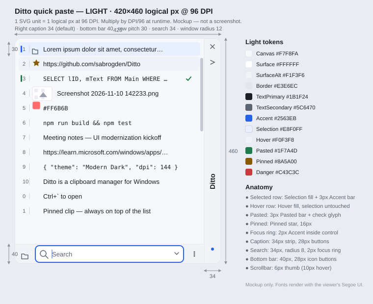
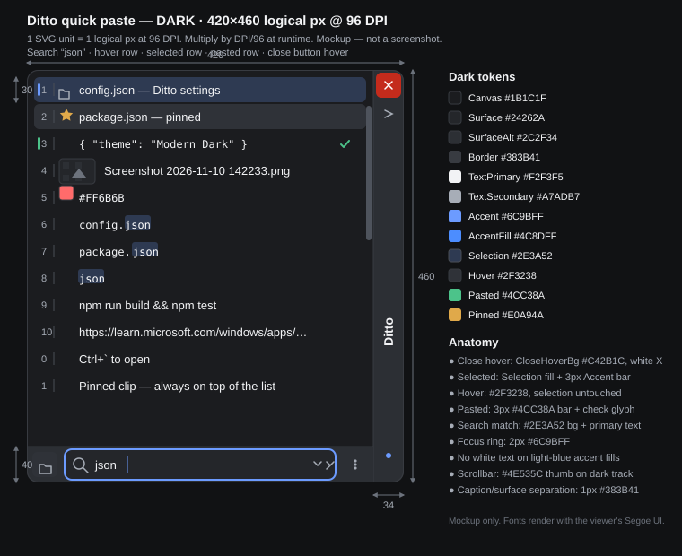
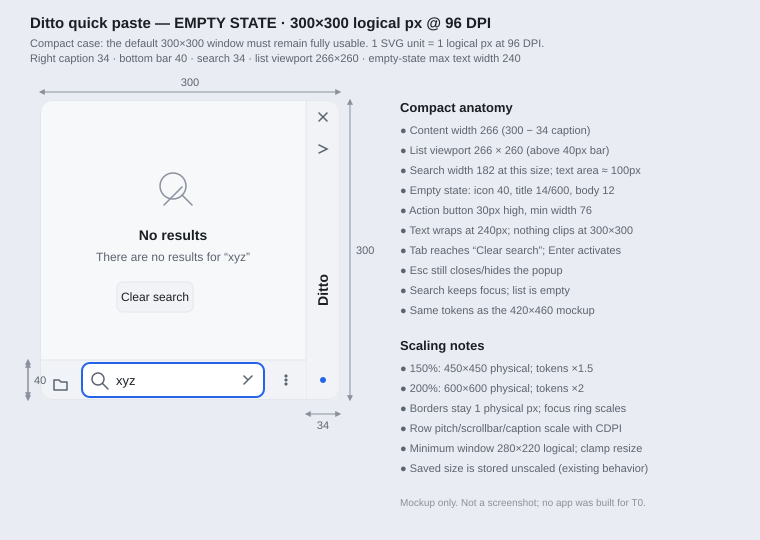

Mockups



What is frozen
- Popup search stays in the bottom command bar (Ditto signature); bar 40px, search 34px.
- Default caption position remains right (vertical); all four positions supported.
- Default popup size stays 300×300; comfortable target 420×480; minimum 280×220.
- Rows: 30px minimum pitch, 8px horizontal inset, 6px radius, 1px vertical inset.
- Modern themes disable zebra; legacy themes keep their explicit odd/even colors.
- Search highlight uses
HighlightBg/HighlightText, not red text. - Pasted = 3px
Pastedbar + check glyph; not a neon strip. - Dark primary buttons:
AccentFill #4C8DFF+AccentOn #0B1220.
What these mockups are not
- Not a web-app prototype. The implementation is native MFC/GDI/GDI+.
- Not pixel-verified. No 100/150/200% runtime screenshots exist.
- Not final icons. T1 may draw vector glyphs or tinted rasters; existing IDs stay.
- Not a license to change settings, command IDs, hotkeys, or language IDs.
- Not evidence of IME, high-contrast, or screen-reader behavior — those need real tests.
T1–T4: implement tokens and states from the SVG anatomy, then capture real screenshots. If a mockup detail conflicts with native behavior (IME, focus, keyboard), native behavior wins.
Light tokens
Canvas
#F7F8FA
#F7F8FA
Surface
#FFFFFF
#FFFFFF
SurfaceAlt
#F1F3F6
#F1F3F6
Border
#E3E6EC
#E3E6EC
TextPrimary
#1B1F24 · 15.58:1
#1B1F24 · 15.58:1
TextSecondary
#5C6470 · 5.63:1
#5C6470 · 5.63:1
Accent
#2563EB · 5.17:1
#2563EB · 5.17:1
Selection
#E8F0FF
#E8F0FF
Hover
#F0F3F8
#F0F3F8
Pasted
#1F7A4D · 5.32:1
#1F7A4D · 5.32:1
Pinned
#8A5A00 · 5.93:1
#8A5A00 · 5.93:1
Danger
#C43C3C · 5.17:1
#C43C3C · 5.17:1
Dark tokens
Canvas
#1B1C1F
#1B1C1F
Surface
#24262A
#24262A
SurfaceAlt
#2C2F34
#2C2F34
Border
#383B41
#383B41
TextPrimary
#F2F3F5 · 15.35:1
#F2F3F5 · 15.35:1
TextSecondary
#A7ADB7 · 7.55:1
#A7ADB7 · 7.55:1
Accent
#6C9BFF · 6.30:1
#6C9BFF · 6.30:1
AccentFill
#4C8DFF · dark text 5.85:1
#4C8DFF · dark text 5.85:1
Selection
#2E3A52
#2E3A52
Hover
#2F3238
#2F3238
Pasted
#4CC38A · 7.69:1
#4CC38A · 7.69:1
Pinned
#E0A94A · 8.07:1
#E0A94A · 8.07:1
Metric reference
| Token | 96 DPI | 150% (144 DPI) | 200% (192 DPI) | Notes |
|---|---|---|---|---|
RadiusWindow | 12 | 18 | 24 | DWM round on Win11; square on Win10 |
CaptionHeight | 34 | 51 | 68 | Width for left/right caption |
BottomBarHeight | 40 | 60 | 80 | Contains 34px search |
SearchHeight | 34 | 51 | 68 | Radius 8 |
ListRowHeight | 30 | 45 | 60 | Grows for 2–5 line modes |
CaptionButtonSize | 28 | 42 | 56 | Glyph 16 |
ButtonHeight | 30 | 45 | 60 | Dialog/empty-state buttons |
ScrollBarThumbWidth | 6 | 9 | 12 | 10 hover width |
Borders use 1 physical px at all scales; focus rings and accent bars use logical scaling. Every value goes through CDPI::Scale at draw time.
Interaction states
| State | Fill | Text/icon | Cue |
|---|---|---|---|
| Default | Surface / SurfaceAlt | TextPrimary | 1px Border |
| Hover | Hover | TextPrimary | BorderStrong on inputs |
| Selected | Selection | SelectionText | 3px Accent bar |
| Selected + focus | Selection | SelectionText | 2px FocusRing |
| Focus only | unchanged | unchanged | 2px FocusRing |
| Disabled | SurfaceAlt | TextDisabled | no hover |
| Pasted | — | — | 3px Pasted bar + check |
| Disconnected | — | — | Danger dot + tooltip |
Accessibility checks
- Body text ≥ 4.5:1; focus ring always visible; state never color-only.
- Keyboard: arrows, PageUp/Down, Home/End, Enter, Shift+Enter, Ctrl+1..0, F3, Esc, Tab, F7, Delete, Alt+Enter.
- High contrast uses system colors and
DrawFocusRect; no alpha/tints. - IME: do not custom-draw composition. Test Chinese/Japanese before claiming success.
- Icon-only buttons need a localized tooltip and accessible name.
- Reduced motion: no fades if
SPI_GETCLIENTAREAANIMATIONis off.
Files
| Path | Purpose |
|---|---|
main-popup-light.svg | Light 420×460, right caption, full anatomy and token legend. |
main-popup-dark.svg | Dark 420×460, search match highlight, close hover, dark token legend. |
main-popup-empty-light.svg | Compact 300×300 empty state and scaling notes. |
../before/README.md | Why baseline screenshots are missing and how to capture them later. |
../../docs/ui/DESIGN-SYSTEM.md | Frozen tokens, component specs, compatibility and accessibility rules. |